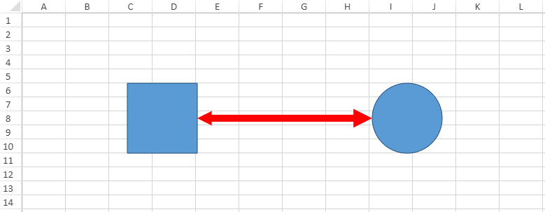

The connector shapes can be used to connect two or more shapes using distinct lines, arrows and connection points. SpreadJS provides extensive support for adding and customizing connector shapes in the worksheet.
You can add connector shapes in the worksheets using different kind of arrows including the normal arrow (no side is pointed), basic arrow (with both sides pointed), the open arrow, the stealth arrow, the oval arrow and the diamond arrow.
Basically, the connector shapes are of the following two types:
Shared below is a screenshot that depicts a connector shape connecting a rectangle and a circle with an arrow.

This example shows how to add a connector shape in the worksheet.
| JavaScript |
Copy Code
|
|---|---|
// Adding the connector shape to the worksheet window.onload = function () { var spread = new GC.Spread.Sheets.Workbook(document.getElementById("ss")); var sheet = spread.getActiveSheet(); //Add two shapes between which a connector shape will be added var shape1 = sheet.shapes.add("myShape1", GC.Spread.Sheets.Shapes.AutoShapeType.rectangle, 150, 100, 100, 100); var shape2 = sheet.shapes.add("myShape2", GC.Spread.Sheets.Shapes.AutoShapeType.oval, 700, 100, 100, 100); // Add a connector shape to connect the two shapes defined above var connectorShape = sheet.shapes.addConnector("myConnectorShape", GC.Spread.Sheets.Shapes.ConnectorType.straight, 250, 150, 700, 150); // Setting connector shape style var oldStyle = connectorShape.style(); oldStyle.line.color = 'red'; oldStyle.line.lineStyle = GC.Spread.Sheets.Shapes.PresetLineDashStyle.dot; oldStyle.line.width = 10; oldStyle.line.capType = GC.Spread.Sheets.Shapes.LineCapStyle.square; oldStyle.line.joinType = GC.Spread.Sheets.Shapes.LineJoinStyle.miter; oldStyle.line.beginArrowheadStyle = GC.Spread.Sheets.Shapes.ArrowheadStyle.triangle; oldStyle.line.beginArrowheadWidth = GC.Spread.Sheets.Shapes.ArrowheadWidth.narrow; oldStyle.line.beginArrowheadLength = GC.Spread.Sheets.Shapes.ArrowheadLength.short; oldStyle.line.endArrowheadStyle = GC.Spread.Sheets.Shapes.ArrowheadStyle.triangle; oldStyle.line.endArrowheadWidth = GC.Spread.Sheets.Shapes.ArrowheadWidth.medium; oldStyle.line.endArrowheadLength = GC.Spread.Sheets.Shapes.ArrowheadLength.medium; connectorShape.style(oldStyle); // Set startConnector for the connector shape var startConnector = connectorShape.startConnector(); connectorShape.startConnector({ name: shape1.name(), index: 3 }); // Set endConnector for the connector shape var endConnector = connectorShape.endConnector(); connectorShape.endConnector({ name: shape2.name(), index: 2 }); }; |
|
Note: SpreadJS doesn't support the following scenarios while integrating connector shapes: